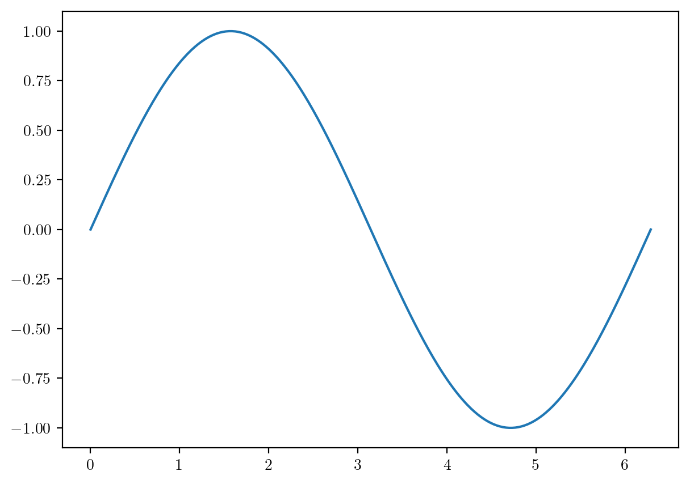
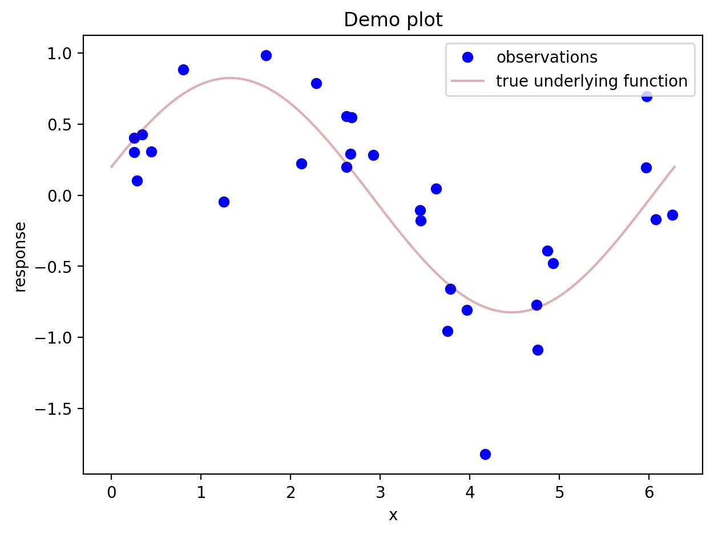
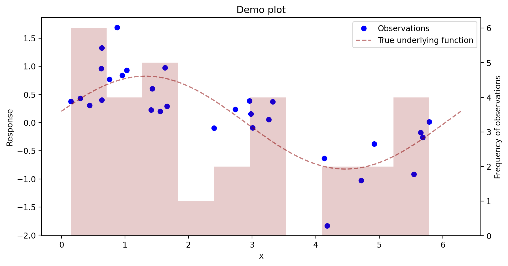
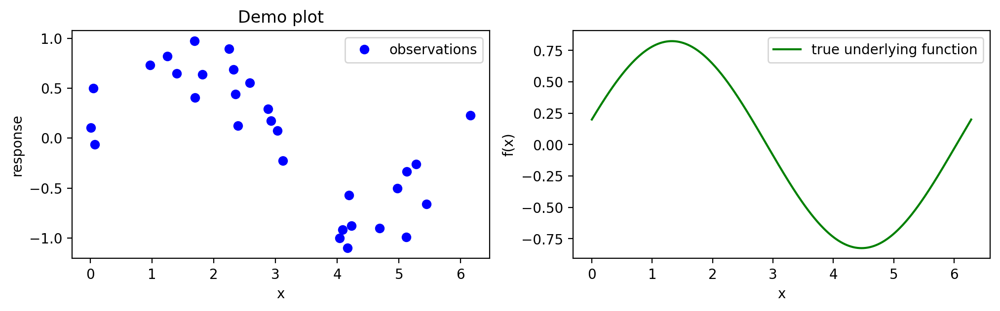
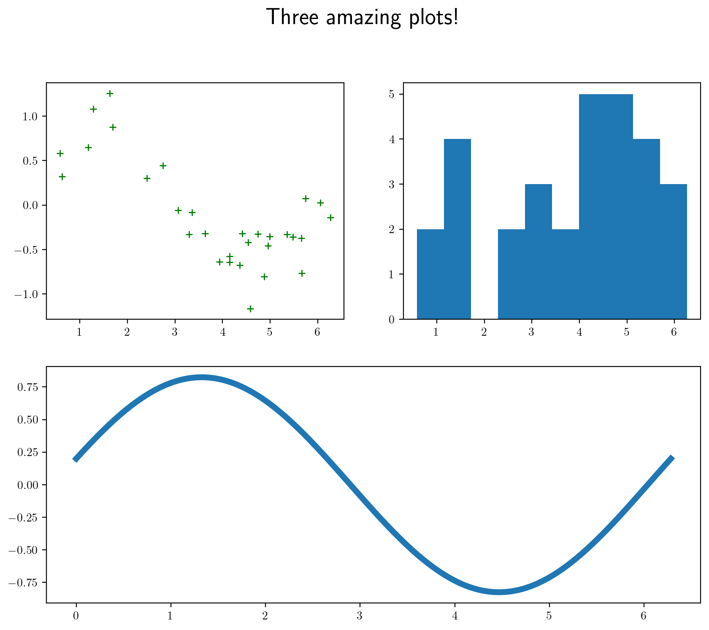
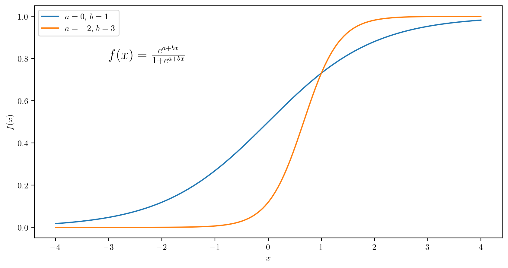
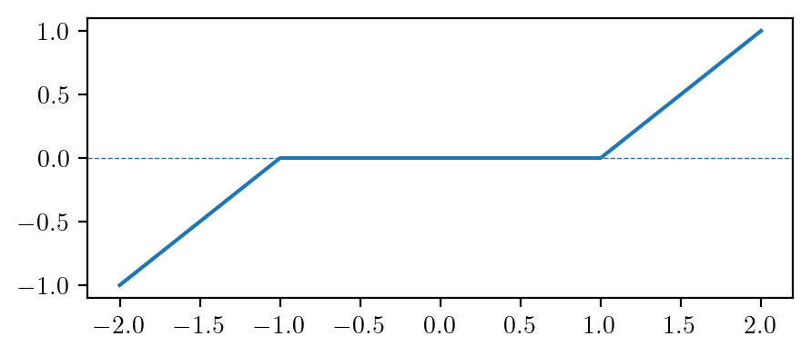
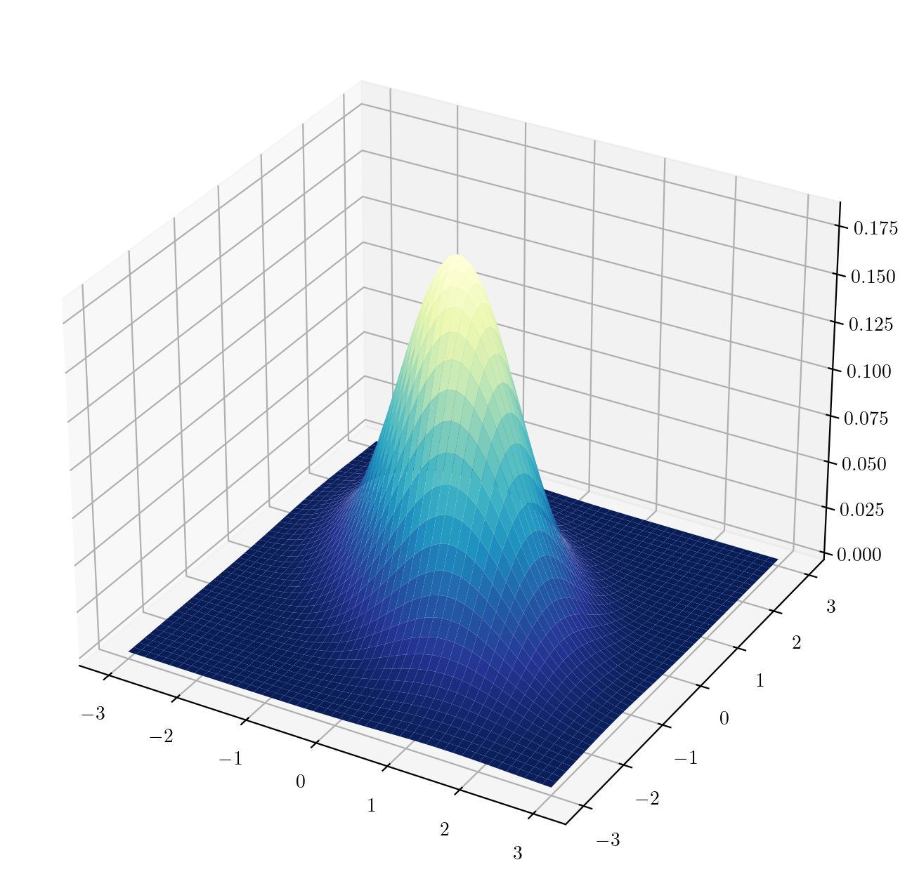
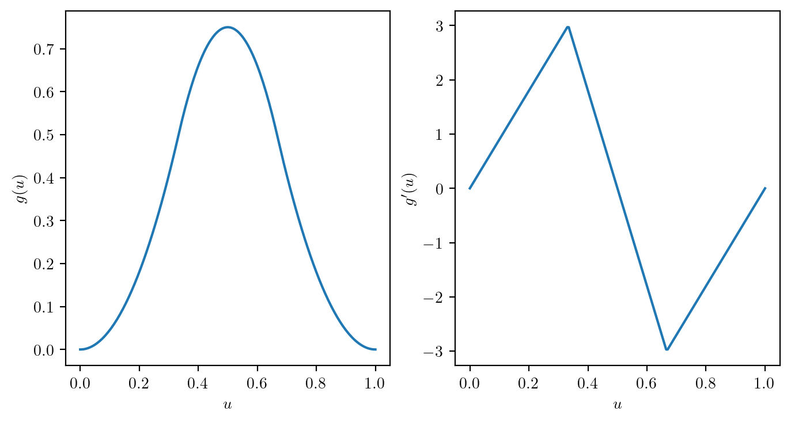

import matplotlib.pyplot as pltPlots, functions, and conditional programming
Making plots
We’ll discover in using Python that you will need to import a library to do whatever the thing is that you want to do. In this note the thing that we want to do is to make plots, so we will import a library called matplotlib, which has this website: matplotlib.org. This is not the only plotting library for Python, but it seems to be “the hottest” right now.
The above is the standard way of importing this library of functions. On the website for the library there are millions of examples of how to make use of all the functionality of this package; to these I will add my own humble offering here.
The first thing about matplotlib is that it plays well with NumPy, so let’s import the NumPy library also with the typical alias np:
import numpy as npHere is a demo of how to make a plot:
x = np.linspace(0,2*np.pi,361)
sinx = np.sin(x)
plt.plot(x,sinx)
plt.show()
Here is a plot with a few more features, including a legend. Legends can be created in an automatic kind of way if a label= is supplied for each feature added to the plot.
# generate some scatterplot data such that the y values are equal to a function plus noise
u = np.random.random(30)*2*np.pi
v = 0.8*np.sin(u) + 0.2*np.cos(u) + np.random.normal(0,1/3,u.size)
# prepare to plot the true function
x = np.linspace(0,2*np.pi,361)
fx = 0.8*np.sin(x) + 0.2*np.cos(x)
plt.figure() # make a new empty figure (so new plots don't keep going on top of the previous one)
plt.plot(u,v,'bo',label = 'observations')
plt.plot(x,fx,label = 'true underlying function',color=(0.545,0,0,.3)) # can put an rgb tuple, last number is opacity
plt.xlabel("x")
plt.ylabel("response")
plt.title("Demo plot")
plt.legend()
plt.show()
You can also spend some time setting up the axes and customizing the plot’s appearance before you show the plot. In the matplotlib tutorials, this seems to be the preferred way to do things. Here is how it works: You have to set up a figure as well as a set of axes. Then you add things to the axes with ax. commands. When you do things this way, a new figure is set up, so you don’t need to worry about your plotting commands simply adding things to your previous plot.
The code below also demonstrates how to set up a second vertical axis on the same horizontal axis.
fig, ax = plt.subplots(figsize= (8,4)) # set up figure and axes. You can here change the size of the figure
ax.plot(u,v,'bo',label = 'Observations')
ax.plot(x,fx,label = 'True underlying function',linestyle="--",color=(0.545,0,0,.5))
ax.set_xlabel("x")
ax.set_ylabel("Response")
ax.set_title("Demo plot")
ax.legend() # gets placed automatically
ax2 = ax.twinx() # set up a second set of axes having the same horizontal axis
ax2.hist(u,color=(.545,0,0,.2),bins=10, label = "asdf") # add a histogram to the second pair of axes
ax2.set_ylabel('Frequency of observations')
plt.show()
Using the latter approach of setting up a figure first allows one to create multi-plot figures. Each individual plot in a figure is referred to as an axes, or a set of axes.
fig, (ax1, ax2) = plt.subplots(1,2,figsize = (12,3)) # put in a 1 by 2 grid of plots, name each "axis"
ax1.plot(u,v,'bo',label = 'observations')
ax1.set_xlabel("x")
ax1.set_ylabel("response")
ax1.set_title("Demo plot")
ax1.legend() # gets placed automatically
ax2.plot(x,fx,'g',label = 'true underlying function')
ax2.set_xlabel("x")
ax2.set_ylabel("f(x)")
ax2.legend()
plt.show()
We can set up plots in a “mosaic” arrangement as follows:
fig, axs = plt.subplot_mosaic([['top_left','top_right'],
['bottom','bottom']],
)
axs['top_left'].plot(u,v,'g+')
axs['top_right'].hist(u)
axs['bottom'].plot(x,fx,linewidth = 5)
fig.suptitle('Three amazing plots!',y=.99,fontsize = 20) # add an overall title. Set y= to move it up or down.
plt.show()
Defining new functions
Here is the syntax for defining a simple, one-liner function:
def f(x): return(x*np.sin(x))
print(f(1))0.8414709848078965We must tell the function explicitly to return a value, or it will not return anything. If there is more than one line of code, we indent the lines, as shown below (no curly braces like in R). When we stop indenting, Python knows that the function definition has come to an end.
def hyp(a,b):
csq= a**2 + b**2
c = np.sqrt(csq)
return(c)
print(hyp(3,4))5.0A function can be made to return more than one value. Just put every object to be returned in the return function.
def eucl(r,th):
x = r*np.cos(th)
y = r*np.sin(th)
return(x,y)
x, y = eucl(2,np.pi/3)
print(x)
print(y)1.0000000000000002
1.7320508075688772We specify default values in Python just as we did in R:
def logistic(x,a=0,b=1):
l = a + x*b
val = np.exp(l) / (1 + np.exp(l))
return(val)
plt.rcParams['text.usetex'] = True # ask to use LaTex in plot labels
x = np.linspace(-4,4,200)
fx1 = logistic(x) # use default values for a and b
fx2 = logistic(x,a = -2, b = 3)
fig, ax = plt.subplots(figsize=(8,6))
ax.plot(x,fx1,label = '$a = 0$, $b = 1$')
ax.plot(x,fx2,label = '$a = -2$, $b = 3$')
ax.set_xlabel('$x$')
ax.set_ylabel('$f(x)$')
ax.text(-3,.8,"$f(x) = \\frac{e^{a + bx}}{1 + e^{a + bx}}$",fontsize = 16)
ax.legend()
plt.show()
Conditional programming
The logic of conditional programming is the same across all programming languages. One has only to learn new syntax with each language. Here are some examples of conditional programs in Python:
def rolldice():
r1 = np.random.choice(np.arange(1,7),1) # draw a number from 1 to 6
r2 = np.random.choice(np.arange(1,7),1)
roll = str(r1) + str(r2)
if( r1 == r2 ):
if(r1 == 1):
print("Hooo-eee, snake-eyes!")
else:
print("Yowza, doubles!")
print(roll)
rolldice()[2][1]The else if syntax in Python is a little different: Instead of typing “else if” you type elif:
def rolldice():
r1 = np.random.choice(np.arange(1,7),1)
r2 = np.random.choice(np.arange(1,7),1)
roll = str(r1) + str(r2)
if( r1 == r2 ):
if(r1 == 1):
print("Hooo-eee, snake-eyes!")
elif(r1 == 6):
print("Can't beat it!!!")
else:
print("Yowza, doubles!")
elif((r1 + r2) <= 7):
print("Ahh, sad rollin'.")
elif((r1 + r2) > 10):
print("Mighty fine!")
else:
print("Well now...")
print(roll)
rolldice()Well now...
[2][6]As we did before in R, we can take advantage of the coercion of a logical value to a numerical value to simplify the definition of piecewise defined functions. For example we can define the function \[ S(x, \lambda) = \left\{\begin{array}{ll} x +\lambda,& x < - \lambda\\ 0,& - \lambda \leq x \leq \lambda \\ x - \lambda,& \lambda < x \end{array}\right. \] for \(\lambda > 0\) as below:
def softthresh(x,lam):
return((x + lam) * (x < -lam) + (x - lam)*(x > lam))
x = np.linspace(-2,2,5)
lam = 1
fx = softthresh(x,lam)
fig, ax = plt.subplots(figsize = (5,2))
ax.plot(x,fx)
ax.axhline(0,linestyle="--",linewidth=.5)
plt.show()
Next we define a function to evaluate the bivariate standard normal density. Then we make a surface plot of the function:
def bivn(z1,z2,rho = 0): # make rho have by default the value 0
r = 1 - rho**2
a = 1/(2*np.pi*np.sqrt(r))
b = (z1**2 - 2*rho*z1*z2 + z2**2) / r
val = a*np.exp(-b/2)
return(val)
gs = 50 # size of the grid
z = np.linspace(-3,3,gs) # make the grid along one dimension
X, Y = np.meshgrid(z,z) # make a 2-dimensional grid out of one dimensional grids
Z = bivn(X,Y,rho=-0.5) # evaluate (quickly) the function at each point in the grid.
fig = plt.figure(figsize=(8,8))
ax = fig.add_subplot(projection='3d')
ax.plot_surface(X,Y,Z,cmap=plt.cm.YlGnBu_r) # cmap is for specifying a colormap
plt.show()
Practice
Practice writing code and reading code with the following exercises.
Write code
- Define \(g(u)\) and \(g'(u)\) as below and plot them over \(u \in [0,1]\) on side-by-side panels in a single figure as shown.
\[ g(u) = \left\{ \begin{array}{ll} (9/2)u^2,& 0 \leq u < 1/3 \\ 9u - 9u^2 - 3/2,& 1/3 \leq u < 2/3\\ (9/2)(1-u)^2, & 2/3 \leq u <1. \end{array}\right. \]
\[ g'(u) = \left\{ \begin{array}{ll} 9u,& 0 \leq u < 1/3 \\ 9 - 18u,& 1/3 \leq u < 2/3\\ 9(1-u), & 2/3 \leq u <1. \end{array}\right. \]

- Obtain a Monte Carlo approximation using the hit-or-miss method to the integral \[ I = \int_{-1}^1 -\frac{3(x+1)\log((x+1)/2)}{\log((x+1)/2 + 2)}dx \] and make a plot like the one shown below:

- Write a function to convert a point \((x,y)\) given in Euclidean coordinates to polar coordinates \((r,\theta)\) via \[ \begin{align*} r & = \sqrt{x^2 + y^2} \\ \theta &= \left\{\begin{array}{ll} \tan^{-1}(y/x),& x > 0\\ \pi + \tan^{-1}(y/x), & x < 0\\ \pi/2,& x = 0, y > 0\\ -\pi/2,& x = 0, y < 0 \end{array}\right. \end{align*} \] as well as a function to convert a point \((r,\theta)\) given in Polar coordinates to Euclidean coordinates \((x,y)\) via \[ \begin{align*} x &= r \cos \theta\\ y &= r \sin \theta. \end{align*} \]
Read code
Anticipate the output of the following code chunks:
def star(p,s):
th = np.linspace(np.pi/2,np.pi/2 + 2*np.pi*s,s*p+1)
x = np.cos(th[::s])
y = np.sin(th[::s])
return x, y
x, y = star(5,2)
fig, ax = plt.subplots(figsize=(4,4))
ax.set_aspect('equal')
ax.axis('off')
ax.plot(x,y)
plt.show()